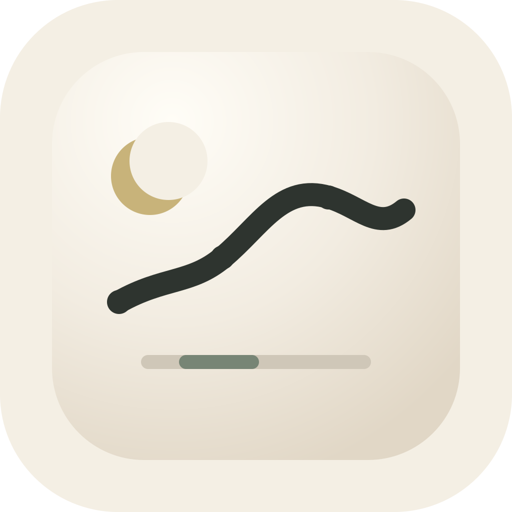
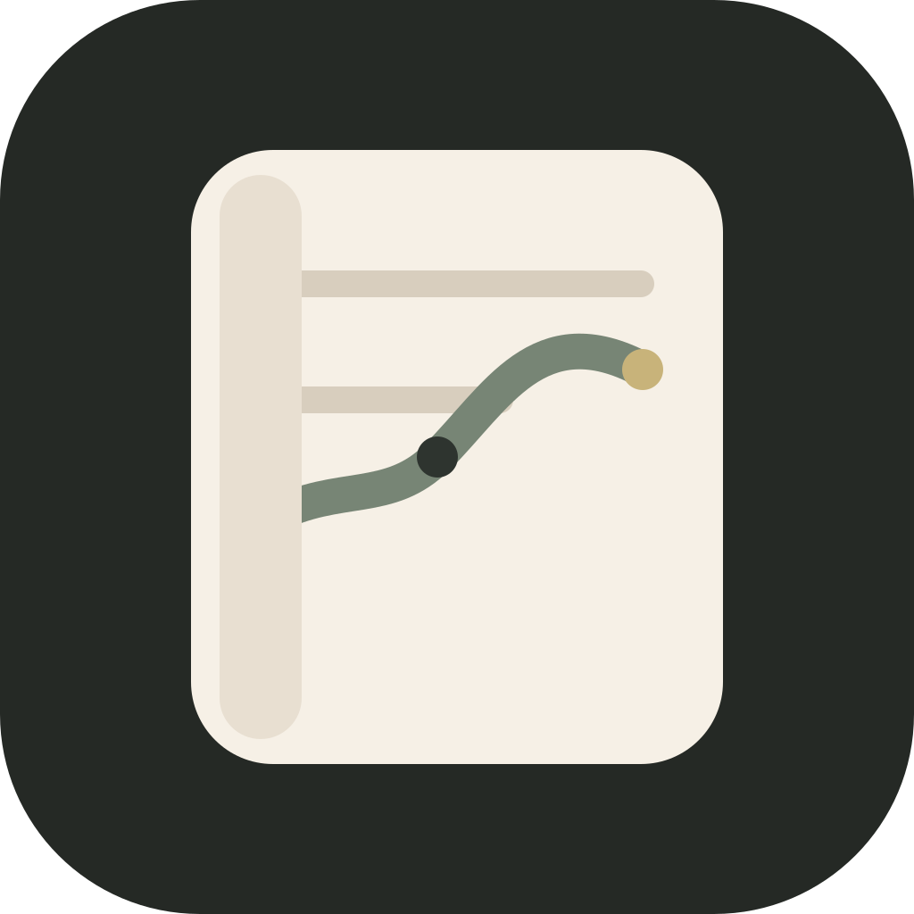
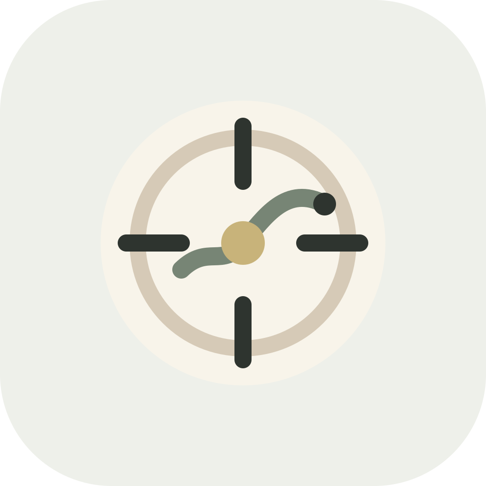
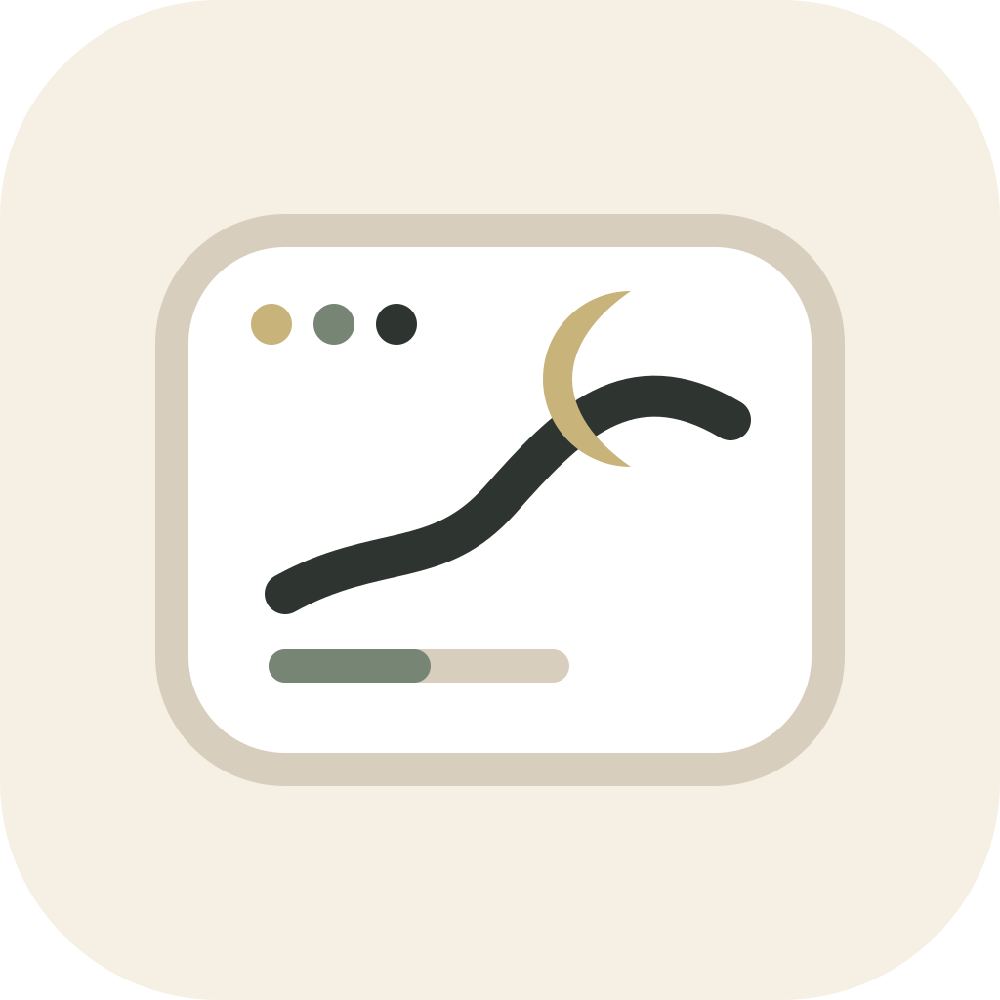

A · 月衡线
最推荐。月相 + 趋势线，直接表达「月度」和「长期变化」。小尺寸识别度最好。

最推荐。月相 + 趋势线，直接表达「月度」和「长期变化」。小尺寸识别度最好。

更像专业桌面 App。强调记录、账本、结构化整理，气质更商务。

强调「财务中枢」。适合表达收支、资产、投资、月报四个模块汇聚。

更接近 Mac App。窗口、月相、趋势线结合，适合发布片里的产品镜头。
中文名「月衡」+ 英文名「Monthline」。高级但不虚，能让人快速理解这是一个月度财务整理与分析产品。